SECCIÓN 4G
FRENO DE ESTACIONAMIENTO
ESPECIFICACIONES
Especificaciones de apriete de la sujeción
| Aplicación | N•m | Lbs-pie | Lbs-pulg. |
| Tuercas de la pantalla térmica del silenciador delantero | 2.5 | - | 22 |
| Tornillo del cable del freno de estacionamiento al eje trasero | 12 | - | 106 |
| Tuercas que unen el cable del freno de estacionamiento al soporte lateral y al soporte cercano a éste en los bajos de la carrocería | 12 | - | 106 |
| Tornillos que unen la consola del freno de estacionamiento a los soportes del túnel | 2.5 | - | 22 |
| Tornillos de la palanca del freno de estacionamiento a los bajos de carrocería del vehículo | 20 | 15 | - |
| Tornillo que une el interruptor del freno de estacionamiento a la palanca de dicho freno | 4 | - | 35 |
| Tuerca de compresión frenable del cubo trasero | 190 | 140 | - |
MANTENIMIENTO Y REPARACIÓN
SERVICIO EN EL VEHÍCULO
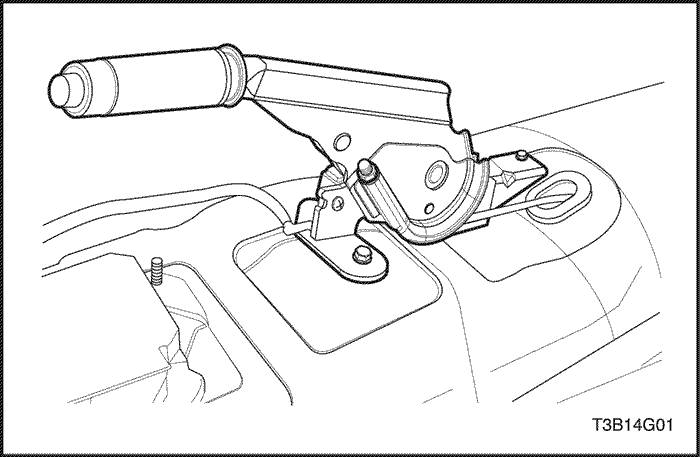


Ajuste del freno de estacionamiento
Procedimiento de ajuste
- Ajuste los frenos traseros. Consulte la Sección 4E, Frenos de disco traseros.
- Suelte el freno de estacionamiento.
- Levante y apoye el vehículo adecuadamente.
- Compruebe que los cables del freno de estacionamiento puedan moverse libremente.
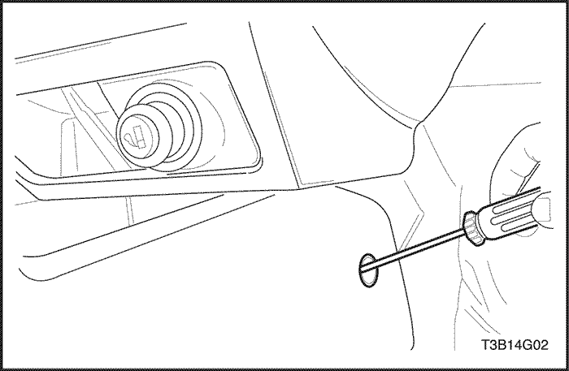
- Baje el vehículo.
- Eche hacia atrás los asientos delanteros para trabajar con suficiente espacio.
- Haga palanca para desmontar las tapas de plástico que cubren los orificios de acceso a los tornillos que unen la consola del freno de estacionamiento a los soportes del túnel.
- Afloje los tornillos que sujetan la consola del freno de estacionamiento a los soportes del túnel.
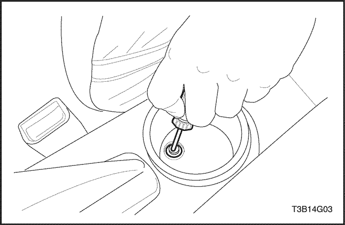
- Levante la consola para dejar al descubierto el conjunto de la palanca del freno de estacionamiento y la tuerca de ajuste.
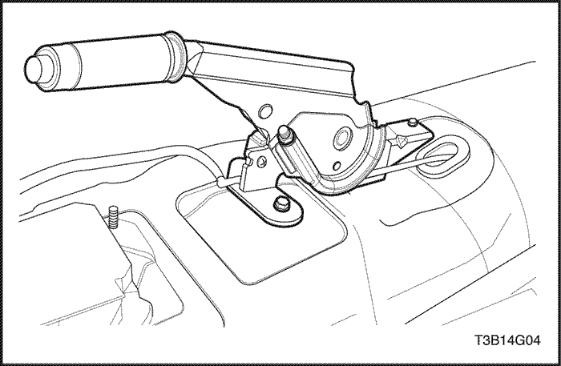
- Levante parcialmente el vehículo y colóquelo sobre apoyos adecuados.
- Gire la tuerca de ajuste en el conjunto de la palanca hasta que las ruedas apenas puedan girar.
- Afloje la tuerca hasta que las ruedas traseras puedan girar libremente.
- Baje el vehículo.
- Coloque la consola del freno de estacionamiento y apriétela en los soportes del túnel con sus tornillos.
Apretar
Apriete los tornillos de la consola del freno de estacionamiento a los soportes del túnel hasta 2.5 N•m (22 lb-pulg).
- Meta a presión las tapas de plástico que cubren los orificios de acceso a los tornillos que unen la consola del freno de estacionamiento a los soportes del túnel.
- Vuelva a poner los asientos delanteros en sus posiciones anteriores.
Palanca del freno de estacionamiento
Procedimiento de desmontaje
- Suelte el freno de estacionamiento.
- Mueva los asientos delanteros hacia delante.
- Haga palanca para desmontar las tapas de plástico que cubren los orificios de acceso a los tornillos que unen la consola del freno de estacionamiento a los soportes del túnel.
- Quite los tornillos que sujetan la consola del freno de estacionamiento a los soportes del túnel. Levante la consola.
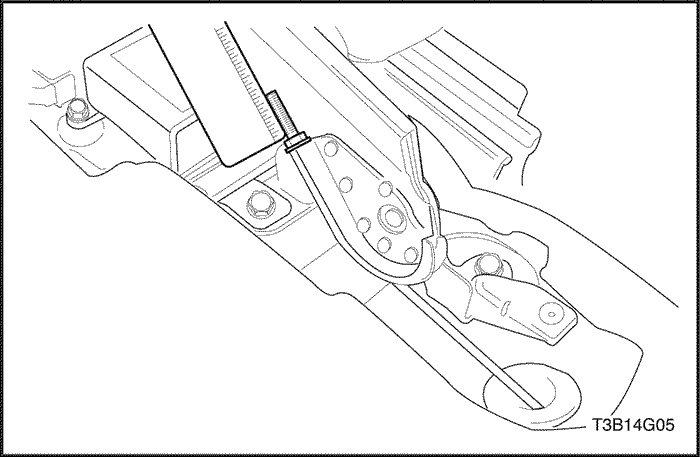
- Mida la longitud de las roscas desde el extremo de la varilla de empuje hasta la tuerca de ajuste antes de quitar dicha tuerca.
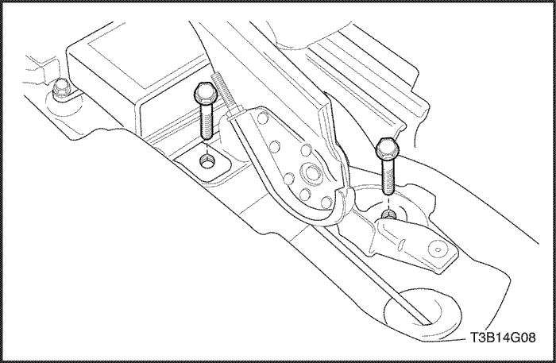
- Desmonte el conjunto completo del freno de estacionamiento y su cable retirando los tornillos que unen la palanca del freno de estacionamiento a los bajos de la carrocería y quitando la tuerca de ajuste.
- Desenchufe el conector del interruptor de la luz de aviso del freno de estacionamiento.
Aviso: El interruptor del freno de estacionamiento debe sustituirse si la luz de aviso de los frenos del panel de instrumentos no se enciende al aplicar el freno de estacionamiento con la llave de contacto en posición ON.
- Si fuera necesario, desmonte el interruptor del freno de estacionamiento que va sujeto al conjunto de la palanca del freno de estacionamiento con un tornillo pequeño.
- Inspeccione el cable de la palanca del freno de estacionamiento y la empuñadura de palanca en busca de daños y sustitúyalos si fuera necesario.
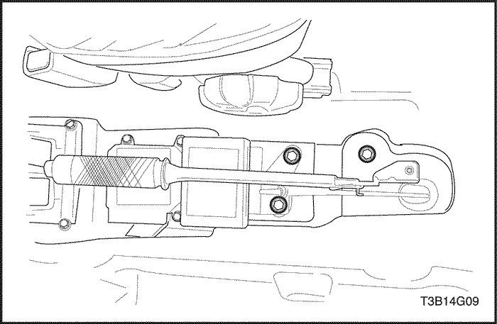
Procedimiento de montaje
Aviso: Si la palanca del freno de estacionamiento está doblada o dañada o si se necesita una nueva empuñadura, sustituya el conjunto de la palanca del freno de estacionamiento, con un cable de la palanca y un interruptor del freno de estacionamiento nuevos.
- Use el tornillo para sujetar el interruptor del freno de estacionamiento a la palanca.
Apretar
Apriete el tornillo del interruptor del freno de estacionamiento a la palanca hasta 4 N•m (35 lb-pulg).
- Fije el conjunto de la palanca del freno de estacionamiento a los bajos de la carrocería del vehículo. Introduzca el cable en la varilla de empuje.
- Apriete la tuerca hexagonal de ajuste en la varilla de empuje aproximándose a la medida anotada en el procedimiento de desmontaje.
Apretar
Apriete los tornillos de la palanca del freno de estacionamiento a los bajos de la carrocería del vehículo hasta 20 N•m (15 lb-pie).
- Enchufe el conector del interruptor de la luz de aviso del freno de estacionamiento.
- Coloque los tornillos que sujetan la consola del freno de estacionamiento a los soportes del túnel.
Apretar
Apriete los tornillos de la consola del freno de estacionamiento a los soportes del túnel hasta 2.5 N•m (22 lb-pulg).
- Monte las tapas de plástico que cubren los orificios de acceso a los tornillos que unen la consola del freno de estacionamiento a los soportes del túnel.
Cable del freno de estacionamiento
Procedimiento de desmontaje
- Suelte la palanca del freno de estacionamiento.
- Desmonte las ruedas traseras. Consulte la Sección 2E, Neumáticos y ruedas.
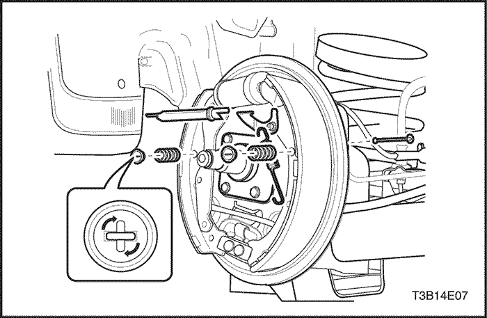
- Quite el anillo elástico de retención del cable del freno de estacionamiento que hay a cada lado del vehículo.
- Desmonte el manguito de plástico.
- Desmonte el cable del freno de estacionamiento de la palanca de la zapata del freno y de la placa de apoyo del mismo.
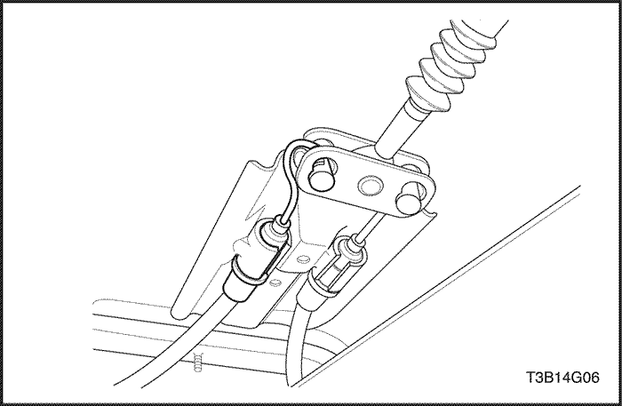
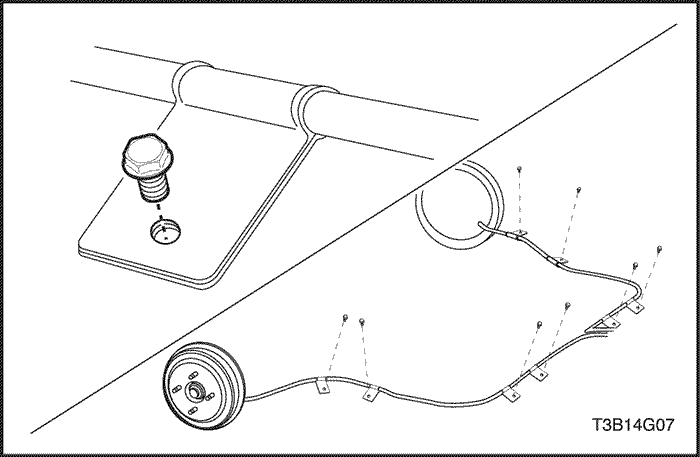
- Quite los tornillos que sujetan el cable del freno de estacionamiento al soporte de sujeción situado en el eje trasero. Quite los tornillos del soporte de fijación del eje trasero en cada lado del vehículo.
- Quite el tornillo que sujeta el cable del freno al soporte lateral de los bajos de la carrocería en cada lado del vehículo. Desmonte el cable.
- Desmonte los cables del freno de estacionamiento del soporte soldado de la carrocería.
Procedimiento de montaje
- Introduzca un cable nuevo del freno de estacionamiento por la placa de apoyo del freno. Use un cable nuevo si el original está dañado o deshilachado. Fije el cable a la palanca de la zapata del freno de estacionamiento.
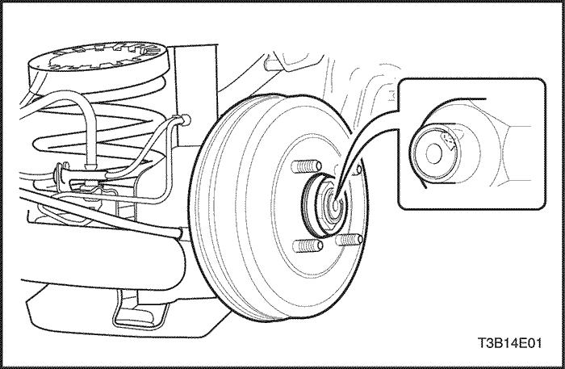
- Introduzca el manguito de plástico en la placa de apoyo del freno y presione el anillo elástico de retención. Asegúrese de que el recorrido del cable del freno de estacionamiento sea correcto.
- Monte los tambores de freno y sujételos con la tuerca de compresión frenable del cubo trasero.
Apretar
Apriete la tuerca de compresión frenable del tambor hasta 190 N•m (140 lb-pie).
- Monte las ruedas traseras. Consulte la Sección 2E, Neumáticos y ruedas.
- Coloque el cable del freno de estacionamiento en los soportes laterales de los bajos de la carrocería que hay a cada lado del vehículo y en un soporte que hay cerca del soporte lateral de los bajos.
Apretar
Apriete los tornillos que unen el cable del freno de estacionamiento al soporte lateral y al soporte cercano a éste en los bajos de la carrocería hasta 12 N•m (106 lb-pulg.).
- Monte el cable del freno de estacionamiento en los soportes del eje trasero que hay a cada lado del vehículo.
Apretar
Apriete el tornillo que une el cable del freno de estacionamiento al soporte del eje trasero hasta 12 N•m (106 lb-pulg.).
- Introduzca los cables del freno de estacionamiento por el soporte soldado de la carrocería.
- Ajuste la longitud del cable del freno de estacionamiento. Consulte esta sección, Ajuste del freno de estacionamiento.
DESCRIPCIÓN GENERAL Y FUNCIONAMIENTO DEL SISTEMA
Freno de estacionamiento
Este sistema de frenos utiliza una luz de aviso de los frenos situada en el cuadro del panel de instrumentos. Cuando se gira la llave de contacto a la posición START, debe encenderse la luz de aviso de los frenos y apagarse cuando la llave de contacto retorna a la posición RUN. Siempre que se aplique el freno de estacionamiento con la llave de contacto en posición ON, debe encenderse la luz de aviso de los frenos.
Cuando se aplique el freno con firmeza, el freno de estacionamiento debería sujetar el vehículo, dejando espacio de sobra para mover el pedal. Compruebe si hay cables deshilachados, óxido, etc., o cualquier otro problema que pudiera impedir la libertad del movimiento presente (o futura) del conjunto de la palanca del freno de estacionamiento.